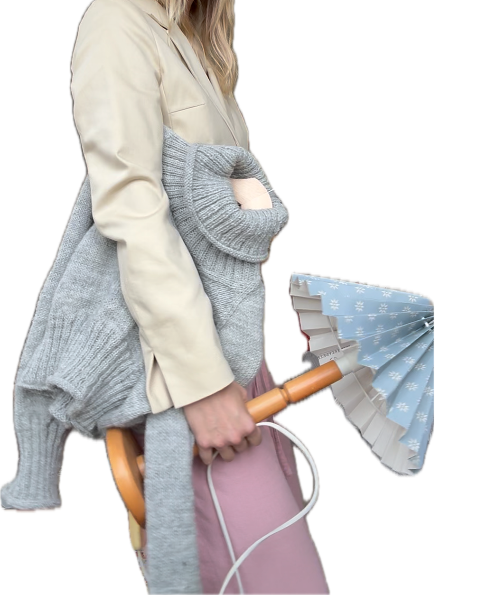

🧦 Stickning
Det är få saker som intresserar mig mer just nu än stickmönster och pågående stickprojekt.


Det är få saker som intresserar mig mer just nu än stickmönster och pågående stickprojekt.
Jag tror att 80 % av vårt hem består av secondhandmöbler och loppisfynd. Är ständigt på jakt efter nästa fynd och tar gärna emot tips på bra butiker!
Har just nu snöat in på klassiker. Läste precis Mina drömmars stad av Fogelström och älskade den. Nu har jag gett mig på Röda rummet av Strindberg.
Allra helst jazz på en liten bar, med något gott i glaset.
Jag älskar projekt där jag får skapa något med händerna. Senast blev det en lampskärm av en loppisfyndad lampfot och tapetprover från Boråstapeter – klippa, stansa och sätta ihop.